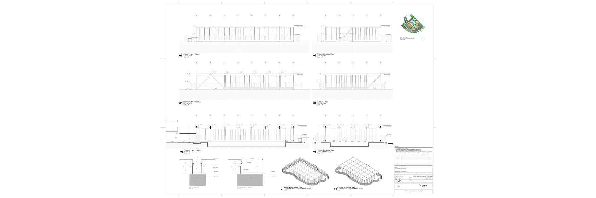
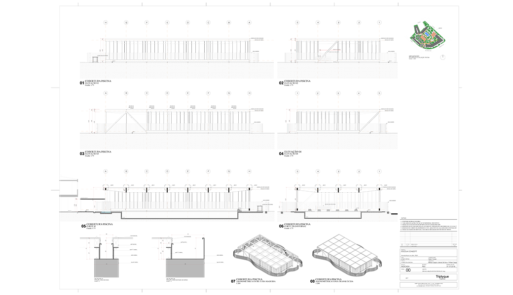
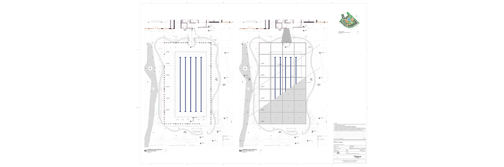
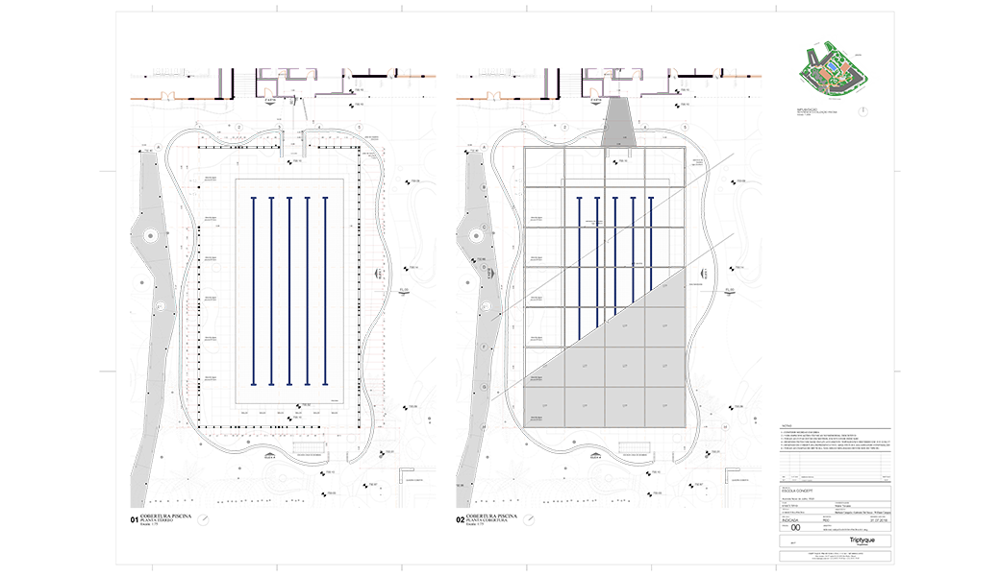
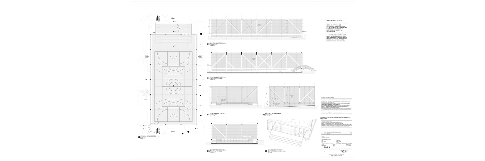
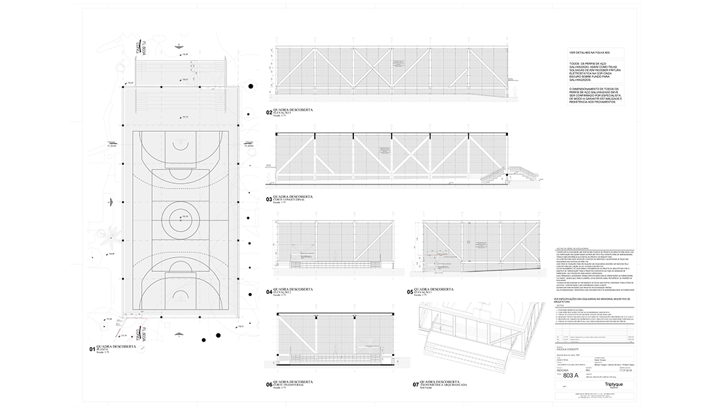
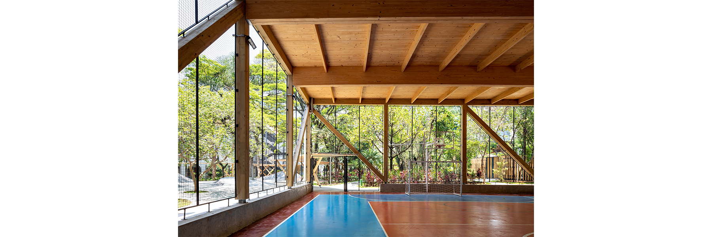
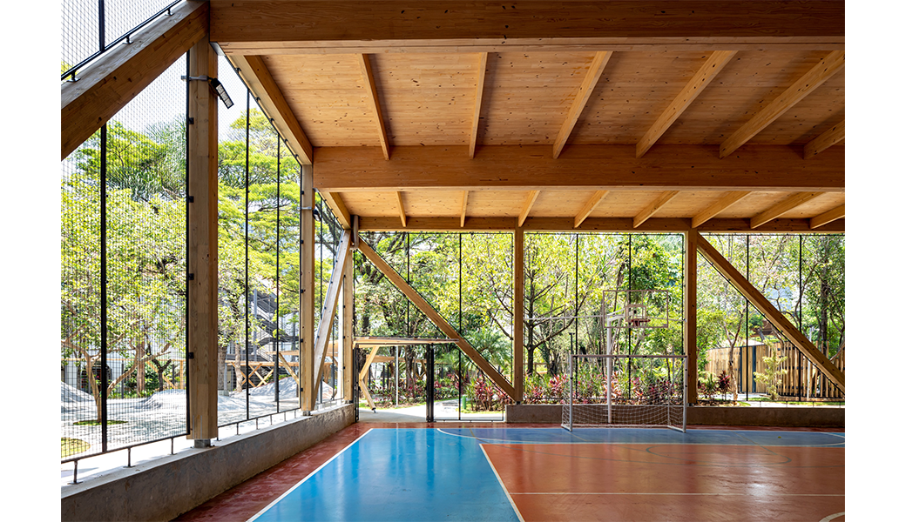
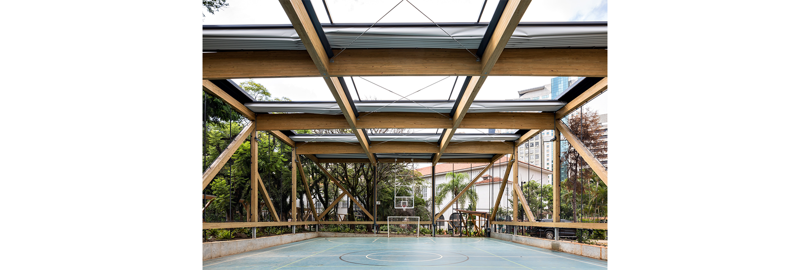
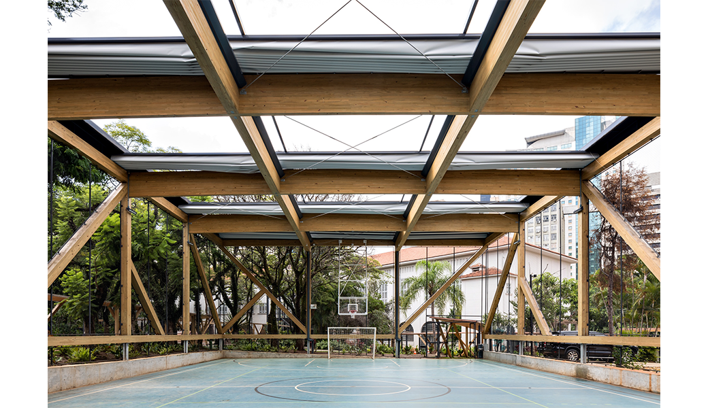
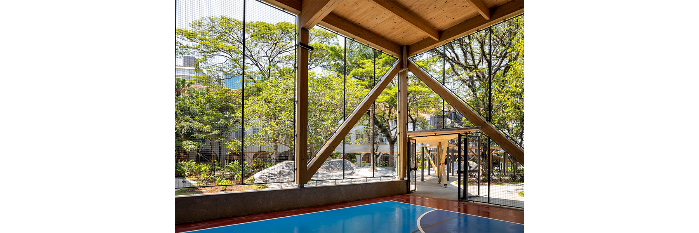
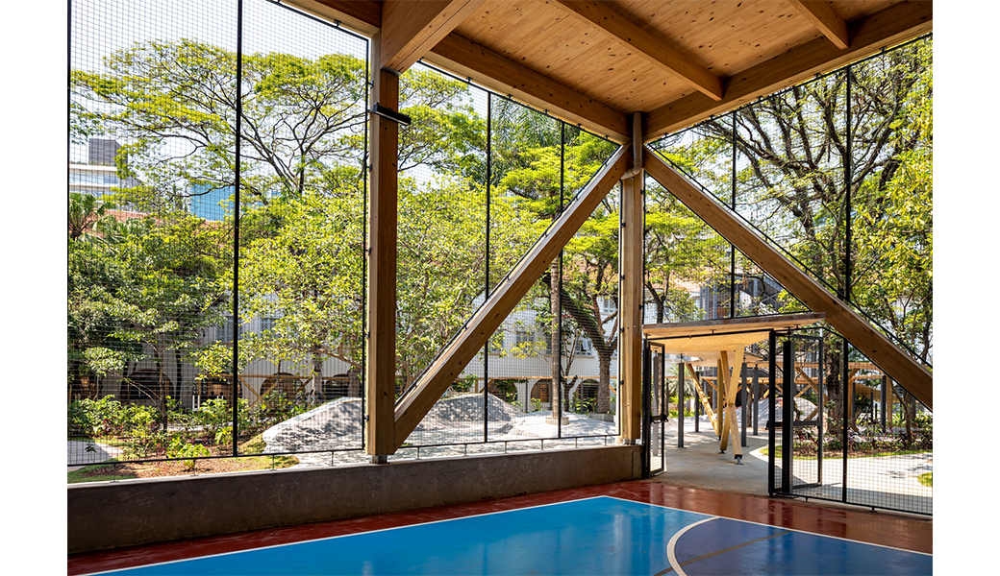
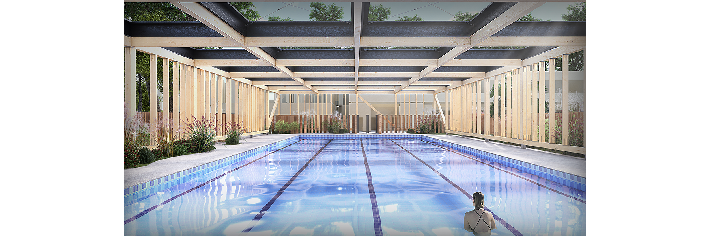
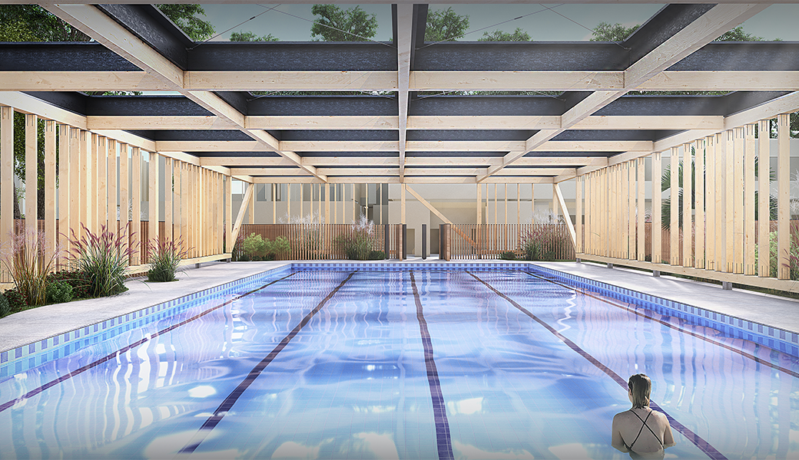
The Sacré Couer School in São Paulo was built in the 1930s and is classified as a historical monument. Nowadays, its preservation is made possible through the implementation of an ambitious school program, heavily influenced by digital culture and bilingual education.
The project focuses on the outdoor spaces of the school, a park with large trees and abundant lush vegetation.
A canopy made of materials of biological origin (certified Brazilian wood) was conceived as a connection between the various buildings on-site, simultaneously constituting an initiatory and sports trail.
The three buildings, the swimming pool, and the sports facilities are interconnected by this organic structure created to enhance the interaction between nature and architecture.